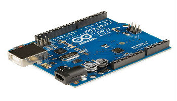

Projects

Arduino
The cortex hub entrepreneurs are doing some work on Arduino project. The Arduino board is a
printed circuit board (PCB) that is specifically designed to use a microcontroller chip as well as
other input and outputs. It also has many other electronic components that are needed for the
microcontroller to function or to extend capabilities.
You write code in the Arduino software to tell the microcontroller what to do. For example, by
writing a line of code, you can tell an LED to blink on and off. If you connect a pushbutton and
add another line of code, you can tell the LED to turn on only when the button is pressed. Next,
you may want to tell the LED to blink only when the push button is held down. In this way, you
can quickly build a behavior for a system that would be difficult to achieve without a microcontroller.